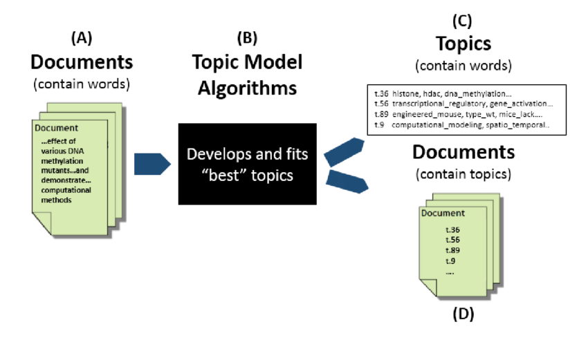

イントロダクション
Contents
イントロダクション#
自然言語処理#
自然言語処理（NLP: Natural Language Processing）は、人間が日常的に使っている自然言語をコンピュータに処理させる一連の技術であり、人工知能（AI）の研究分野で中核を成す要素技術の一つといえます。
私たちは普段、自分たちの言語の複雑さについて考えることはありません。言語は歩くのと同じように、訓練された反復可能な行動であるため、習得しやすく、青年期にはより自然に使用できるようになると言われています。ただ、人間にとって自然なことでも、大量の非構造化データを処理し、正式なルールがないばかりか、現実世界のコンテキストや意図もないコンピューターにとっては、それを成すことは非常に困難です。
近年、自然言語処理技術の急速な進歩に驚きの声が上がっていました。2018年にGoogleが発表した「BERT」というシステムでは、開発者が少し手を加えるだけでさまざまなタスクに使えるようになりました。それだけでも驚きでしたが、一般人の中でも話題になる「ChatGPT」をはじめとする自然言語処理技術の進展により、質問への回答、文章の要約や翻訳、ソフトウエアのプログラミングなど、言語に関わるさまざまなタスクができるようになりました。
高機能化のカギは、深層学習技術の発展があります。深層学習を用いた自然言語処理には、あらかじめ用意した膨大な文章を使って、「言語モデル」と呼ばれるシステムを学習させる方法があります。 言語モデルの実体は簡単な計算式を大量に組み合わせた超巨大な数式といえます。最先端の言語モデルでは、想像を絶するほど大量の文章を使い、パラメータ（数式の係数）が数千億に達するほどの大規模な言語モデル(LLM : Large Language Models)を学習させて使っています。LLMが人間に匹敵するほどの高度な能力を持つ、文章の作成や会話を利用するさまざまな仕事を、コンピュータに任せることが可能になってきました。
計算社会科学において然言語処理の応用#
人間の社会行動に関するデジタル化された高密度・大容量のデータの蓄積を背景に、近年、計算社会科学と呼ばれる新たな学問領域が勃興し、急速な発展を遂げています。計算社会科学において，テキストデータの収集・分析は広く用いられている研究手法です。ここで、自然言語処理技術の発展が計算社会科学にす新たな可能性をもたらせます。
本講義の目的は、計算社会科学に多く応用された自然言語処理技術を理解し、実問題に適用するための基礎力を身につけることです。その目的を達成するために、自然言語処理の基礎、重要な概念と主な手法を学習する。さらに、Python用いて、自然言語処理によく用いられるライブラリとツールを学習しつつ、自然言語処理技術を応用するスキルを修得する。
Topic Model#
トピックモデルは，確率的な言語生成モデルの一種です。その目的は，コーパスを潜在的に特徴づけるトピックを抽出すること，またトピックによって各テクストを特徴づけ・分類することになります。

トピックモデルではコーディングによって形成される語の集合に準ずるものをトピックとして示すことができます。トピックをを構成する複数の下位概念や単語によって立体的，構造的に捉えることができます。

アメリカの芸術政策に対する意見のあり方について，それを扱った新聞記事を分析することを通して，複数のトピックを析出し，時期や新聞社ごとに，潜在するトピックに差があることを示す [DiMaggio et al., 2013]
- DNB13
Paul DiMaggio, Manish Nag, and David Blei. Exploiting affinities between topic modeling and the sociological perspective on culture: application to newspaper coverage of u.s. government arts funding. Poetics, 41(6):570–606, 2013. Topic Models and the Cultural Sciences. URL: https://www.sciencedirect.com/science/article/pii/S0304422X13000661, doi:https://doi.org/10.1016/j.poetic.2013.08.004.
講義の構成#
イントロダクション
自然言語処理の基礎 💻
コーパス、Tokens
Unigrams, Bigrams, Trigrams, …, N-grams
前処理
Topic Model 💻 🔣
BoW
Topic Modelの原理
Topic Modelの実装
Word Embedding 💻 🔣
単語分散表現の説明(分布仮説、共起行列)
カウントベース手法
深層学習の基礎 💻 🔣
Activation Functions, Loss Functions, Supervised Training
ニューラルネットワーク
pytorch
word2vec 🔣
word2vecの原理(CBOW, Negative Sampling)
word2vecの実装 💻
gensimによるword2vecモデルの学習
word2vecが人文・社会科学研究における応用 📄
自然言語処理と因果推論(1) 📄 🔣
自然言語処理と因果推論(2) 💻
Sequence Modeling for Natural Language Processing 💻 🔣
Attention 💻 🔣
BERTの原理 💻 🔣
BERTによるテキスト分類の実装 💻
大規模言語モデル 📄
💻 : プログラミング作業が含む講義、PythonとJupyterの基本の使い方を把握することが前提となります
🔣 : 数学に関わる解説が含む講義、基本的な微積分と線形代数の知識が前提となります
📄 : 英語論文を読む必要がある講義